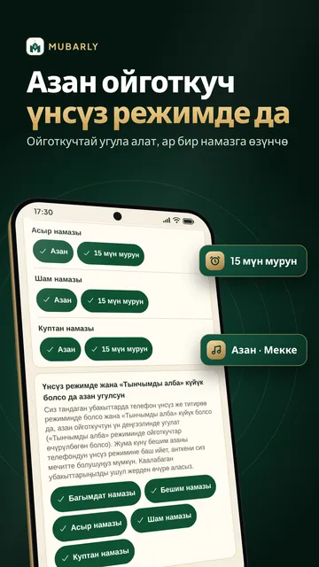
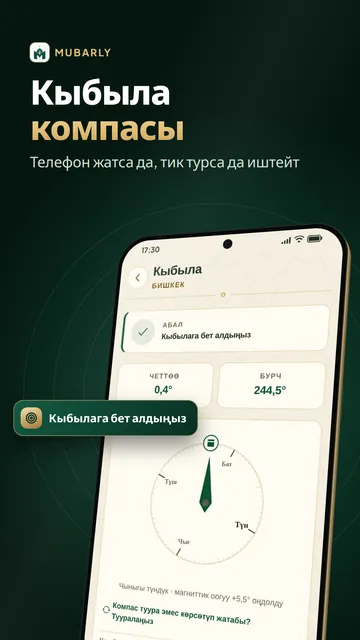
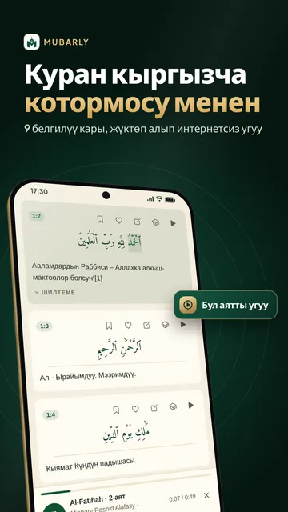
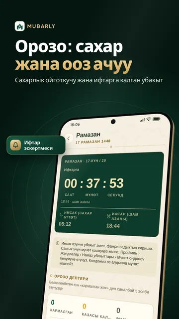
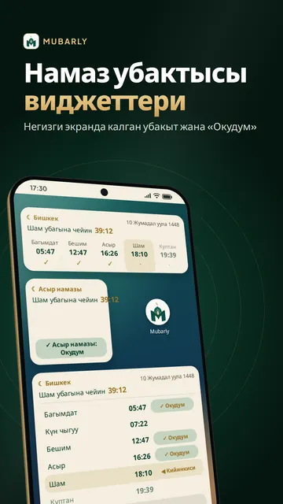
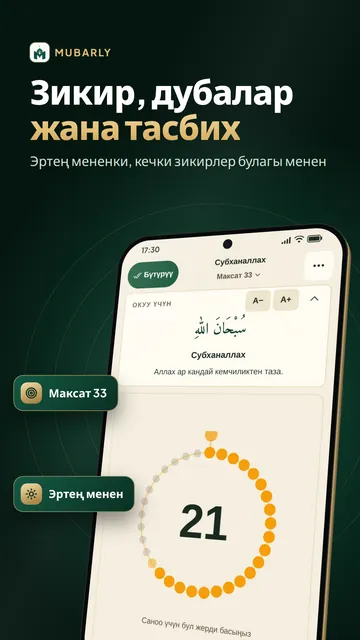
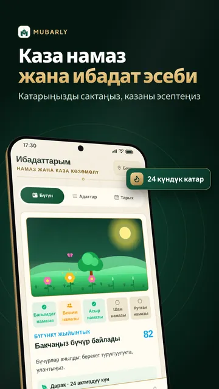

Намаз убактысы жана азан







Шаарлар боюнча намаз убактысы
Mubarly — намаз убактысы, азан, кыбыла компасы, кыргызча котормосу менен Куран, дубалар жана зикир бир колдонмодо. Телефон үнсүз режимде же «Тынчымды алба» күйүк болсо да, сиз тандаган намаздарда азан ойготкуч (будильник) сыяктуу угула алат. Намаз убактысы Бишкек, Ош, Москва же дүйнөнүн каалаган шаары үчүн телефонуңузда эсептелет жана интернетсиз иштейт.
Намаз убактысы жана азан
- Беш убак намаздын (Багымдат, Бешим, Асыр, Шам, Куптан) убактысы 14 ыкманын бири менен эсептелет; Асыр кадимки же Ханафий эсеби боюнча
- Үн тандоо: Мекке, Медина же Балкан макамы (алгачкы такбирлер, болжол менен 20 секунд), жумшак коңгуроо же титирөө гана
- Намаздан 5–60 мүнөт мурун эскертүү жана «Намаз окудуңузбу?» суроосу
- Жөндөө жардамчысы керектүү уруксаттарды кадам-кадам күйгүзөт, азан кечигиши же үнсүз калышы мүмкүн болсо эскертет
- Негизги экранга үч виджет: кийинки намазга калган убакыт, бүгүнкү убактылар жана күндүн аяты
- Мусулман календары: хижрий дата, Кадыр түнү, Орозо айт, Курман айт жана башка ыйык күндөр
Куран Карим
- Куран окуу: осмон же жөнөкөй жазуу, 604 беттик мусхаф; араб тексти интернетсиз ачылат
- Хакимовдун кыргызча котормосу, белгилер жана эскертмелер
- Куран угуу: Мишари Алафаси, Абдулбасит сыяктуу 9 белгилүү карынын тилаваты; Ясин, Амма парасы же бүт 114 сүрө интернетсиз угуу үчүн жүктөлөт
- Алиф Ба: тамгалардан баштап окууну үйрөнүү; бет планы менен Жаттоо режими (Premium)
Кыбыла
- Кыбыла (кибла) компасы магниттик четтөөнү эсепке алат, металл же магнит жакын болсо эскертет; компас жок болсо, күндүн жардамы менен кыбыла кайсы тарапта экенин табасыз
Зикирлер жана дубалар
- Эртең мененки жана кечки зикирлер, уктаар алдында, сапарда, ооруганда окулуучу күнүмдүк дубалар, ар бири хадис булагы менен
- Зикир эсептегич (тасбих): 33, 99 же 1000 сыяктуу максаттар, намаздан кийинки тасбихат
- Аллахтын 99 ысымы жана алардын мааниси
Намаз окууну үйрөнүү, ажылык жана умра
- Намаз колдонмосу: намаз окуу тартиби, даарат жана гусул кадам-кадам
- Ажылык жана умра колдонмосу: амалдар кадам-кадам, ажылык күндөрү, дубалар, тавап жана сай эсептегичи, даярдык тизмеси
- Пайгамбарлардын өмүрү жана Ислам тарыхынын маанилүү окуялары
Рамазан жана орозо
- Рамазанда сахарлык ойготкучу үнсүз режимде да шыңгырайт жана «Ойгондум» баскычын баспасаңыз, 3 жана 6 мүнөттөн кийин кайталанат
- Ооз ачуу (ифтар) убагында билдирме, ооз бекитүүгө (сахардын аягына) жана ифтарга чейин калган убакыт
- 2027-жылы орозо качан башталарын календардан көрөсүз; 30 күндүк намаз жадыбалын (PDF) орозо календары катары колдонсоңуз болот
Ибадат эсеби жана каза намаз
- Ар бир намазды убагында, кечигип же жамаат менен окулду деп белгилеп, катарыңызды сактаңыз
- Каза намаз эсептегич жана мусафир намазы
- Аялдар үчүн айыз же нифас күндөрү: намаз каза деп эсептелбейт, маалымат телефондо гана калат
Мечит, зекет жана бирге ибадат
- Жакынкы мечиттер картада: дүйнө боюнча 300 миңден ашык мечит, жөө баруучу жолу менен
- Зекет эсеби: алтын, күмүш жана акча, учурдагы грамм баасы (интернет менен)
- Үй-бүлө режими жана Хатым халкасы; акысыз жана каттоосуз
Төрт мазхаб
- Асыр, орозо, каза, зекет, сапар жана айыз-нифас өкүмдөрү, намаз жана ажылык колдонмолору сиз тандаган мазхабга ылайык: Ханафий, Шафиий, Маликий же Ханбалий; булактары көрсөтүлөт
Ыңгайлуулук жана тилдер
- Жөнөкөй режим (чоң текст жана баскычтар), караңгы тема; 20 тил, анын ичинде кыргызча, орусча жана түркчө
Premium
Ибадат бөлүмдөрү баарына акысыз. Толук экрандуу жарнама жок; Куран, азан, кыбыла, зикир эсептегич жана дуба экрандарында жарнама болбойт. Premium бардык жарнаманы алып салат, Жаттоо режимин, Уйку жана тафаккурду (тынч үндөр, уктаар алдындагы тасбихат, дем алуу) жана кошумча темаларды ачат; же кыска видео көрүп, Premium’ду бир нече саатка ачсаңыз болот.
Купуялык: аккаунт талап кылынбайт (кирүү камдык көчүрмө жана шайкештөө үчүн гана), жайгашкан жер фондо колдонулбайт, камера жана микрофон керек эмес. Mubarly маалыматтарыңызды сатпайт.